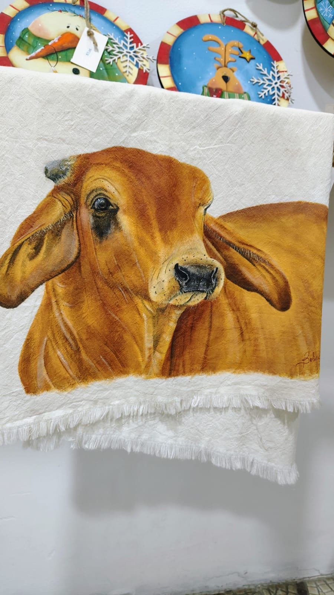
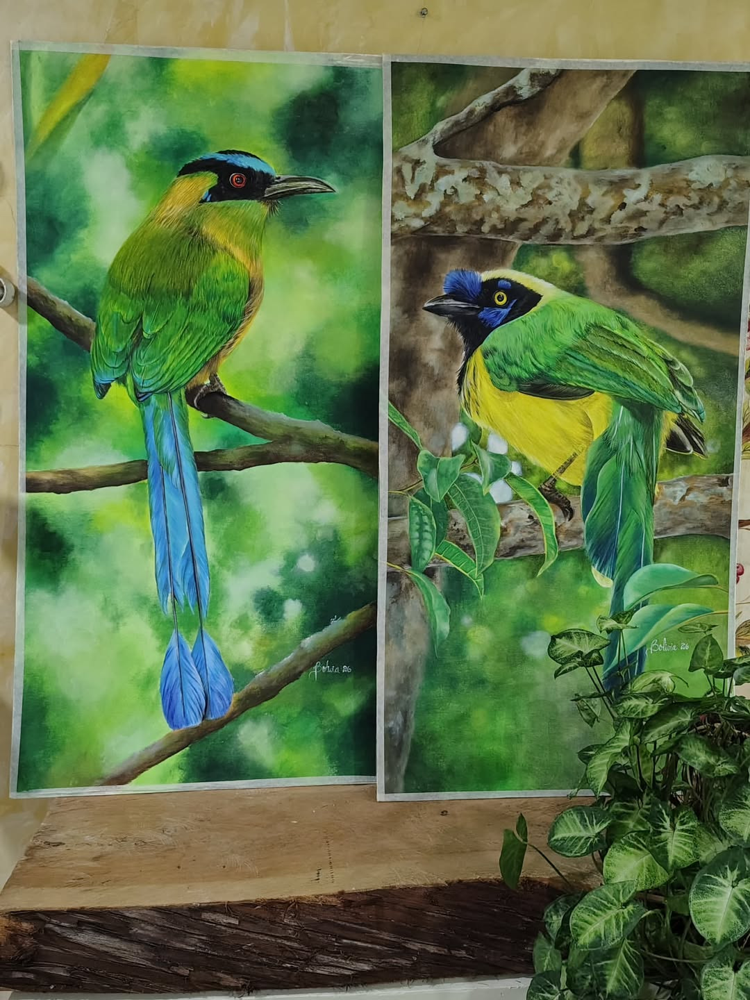
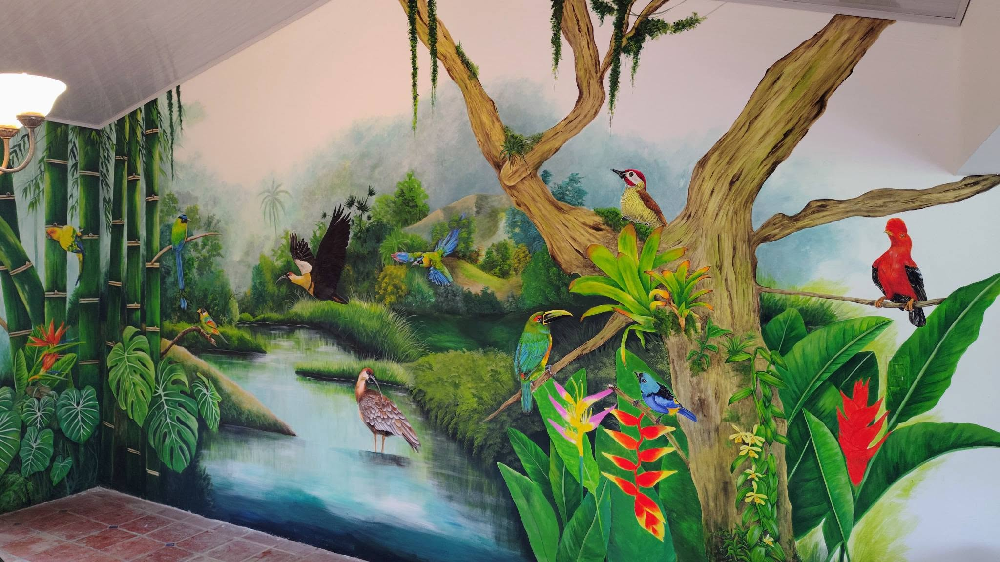
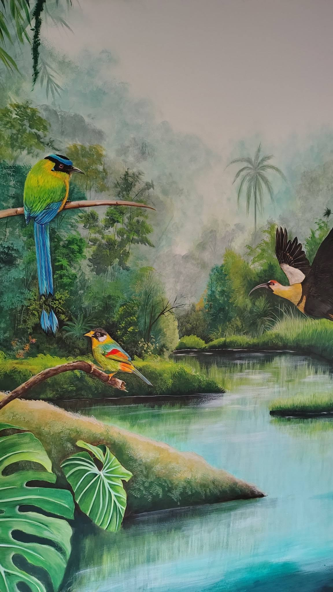
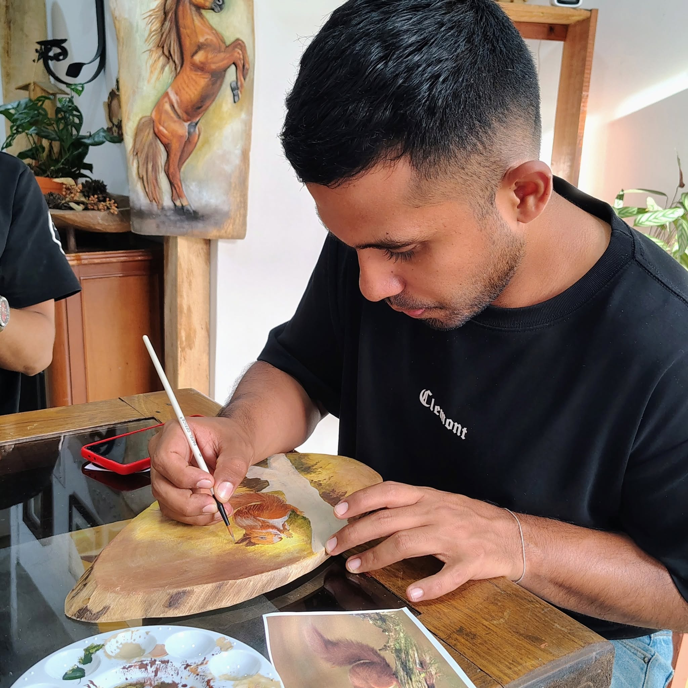
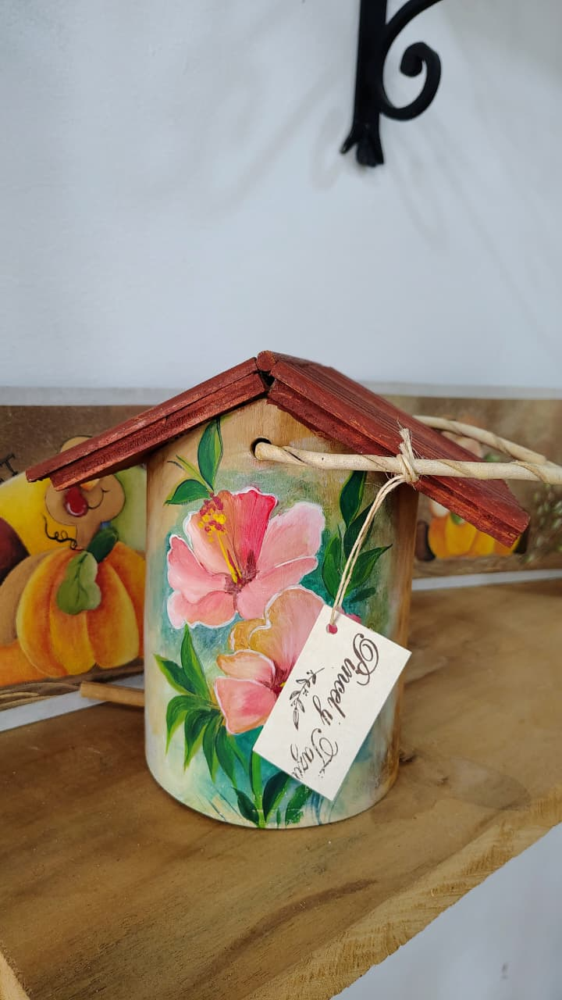
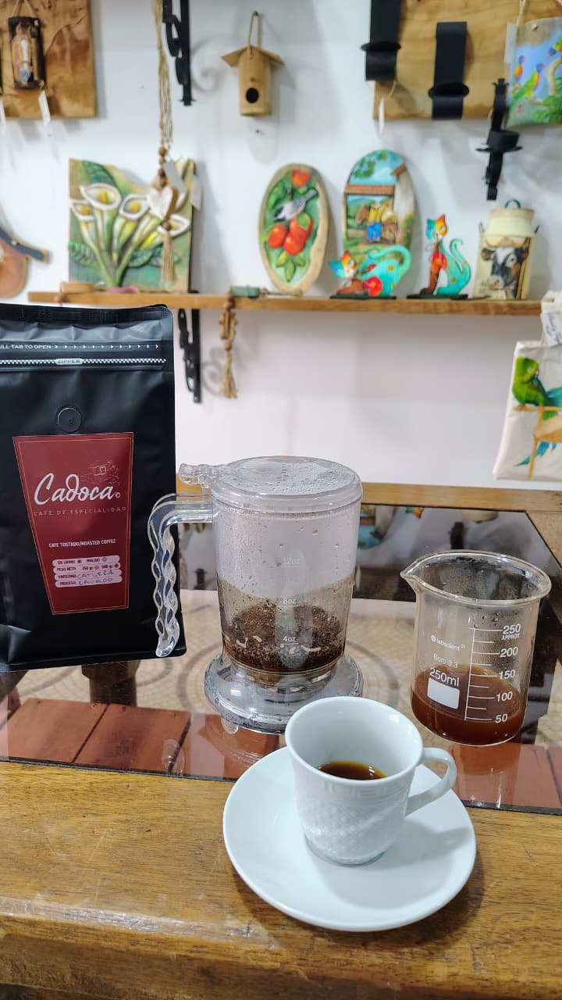

Galería de Obras



Pincel y Taza es un espacio cultural ubicado en Quimbaya, Quindío, donde convergen el arte, la creatividad, la formación artística y el café de especialidad.
La artista Bolivia Ramírez comparte aquí sus obras, murales, artesanías y experiencias creativas en un ambiente cálido y acogedor.


Diseñamos y ejecutamos murales artísticos para hogares, cafeterías, hoteles, restaurantes y espacios culturales.



Ofrecemos seminarios de pintura, talleres creativos y clases personalizadas para niños, jóvenes y adultos.


Disfruta una experiencia artística acompañada por café de especialidad cuidadosamente preparado.
📍 Carrera 7A # 8-38
Quimbaya, Quindío
🕘 9:00 a.m. – 12:00 p.m.
🕑 2:00 p.m. – 6:00 p.m.
📱 WhatsApp: 319 391 7729
📷 Instagram: @pincelytaza
📘 Facebook: Pincel y Taza